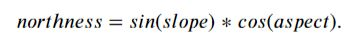
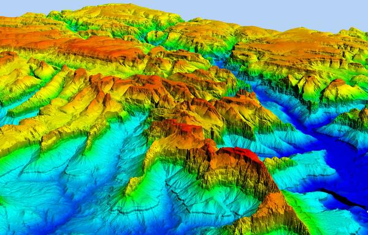
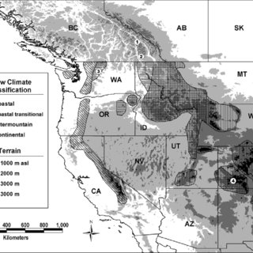

Data Preparation and Feature Engineering
Contents

Data Preparation and Feature Engineering#
Model data comes from the following sources National Resource Conservation Service (NRCS) Snow Telemetry (SNOTEL), California Data Exchange Center (CDEC), Copernicus 90-m DEM, and the NASA Airborne Snow Observatory (ASO). Feature engineering creates new features to capture the influences of the time of year, latitude, longitude, and elevation on SWE dynamics. Below is a generalized workflow for retrieving the data and engineering the following features for input into the machine learning models.
Feature id |
Description |
|---|---|
WY Week |
Numerical ID of the week of the water year |
Latitude |
Center latitude of the training grid cell |
Longitude |
Center longitude of the training grid cell |
Elevation |
DEM elevation of the training grid cell |
Northness |
Calculated northness of the training cell |
SNOTEL SWE |
Current week’s observed SWE from SNOTEL |
Prev SNOTEL SWE |
Previous week’s observed SWE from SNOTEL |
Delta SNOTEL SWE |
Difference between Previous week’s and current week’s observed SWE from SNOTEL |
Previous SWE |
Observed SWE from previous week |
Note, the Previous SWE feature is an observation for model training and testing but will be predicted when forecating.
Data Processing/Retrievel Overview#
Data processing is likley the most tedious part of the model development pipeline and uses the elevation, slope, and aspect derived from DEM data through nearest-neighbor interpolation to produce values for all training, testing, and inference locations based on the four latitude and longitude corners of each grid cell.
Feature Engineering Overview#
Feature engineering consists of creating terrain (i.e., northness), temporal, and snow features.
The calculation of the northness metric uses the slope and aspect values of each grid cell, using the embedded slope and aspect information within the metric to aid in ML model training and reducing the model dimensionality.
{kind=link}
Temporal features support model training relative to seasonal snow accumulation and melt phases, consisting of a week-id as an integer from the beginning of the water year (WY) on October 1st.
Snow observation features utilize in-situ station SWE observations, using the values observed from the current (Snotel/CDEC SWE) and the previous observation (Previous Snotel/CDEC SWE) as inputs. from current and previous observations, Delta SWE highlights the difference to capture the trend, either positive or negative, in SWE dynamics (i.e, melt or accumulation) with respect to each monitoring station ( \(\Delta\) SWE).
Grid cell previous observation features capture the strong serial correlation of snow accumulation and melt on the SWE estimate, the model uses the SWE estimate of the previous week as a feature (Previous SWE). For model training and testing, the Previous SWE input is from NASA ASO datasets while the hindcast uses the previous model SWE estimate.
Below are simple data access and processing examples, please see the National Snow Model Github for complete examples.#
Loading Provided SWE Observations from Snowcast Showdown#
The project supported the participation of the Snowcast Showdown, and while we shared useful code for SNOTEL and CDEC data retrievel (needed for forecasting), the information was provided by the United State Bureau of Reclaimation. We provide the supported modeling materials and provide the respective data processing and feature engineering steps.
%pip install myst-nb pandas==1.4.3 h5py tqdm tables scikit-learn seaborn tensorflow progressbar contextily hydroeval geopandas==0.10.2 nbformat==5.7.0 pystac_client planetary_computer rioxarray matplotlib basemap numpy richdem
import pandas as pd #need to pip install 1.4.3
import json
from tqdm import tqdm #need to pip install
import warnings; warnings.filterwarnings("ignore")
datapath ='/home/jovyan/shared-public/snow-extrapolation-web/'
#Set up training DF with key metadata per site
#All coordinates of 1 km polygon used to develop ave elevation, ave slope, ave aspect
colnames = ['cell_id', 'Region', 'BR_Coord', 'UR_Coord', 'UL_Coord', 'BL_Coord']
SWEdata = pd.DataFrame(columns = colnames)
#Load training SWE data
TrainSWE = pd.read_csv(f"{datapath}/data/Prediction_Location_Observations.csv")
#drop na and put into modeling df format
TrainSWE = TrainSWE.melt(id_vars=["cell_id"]).dropna()
#Load SWE location data
with open(f"{datapath}/data/grid_cells.geojson") as f:
data = json.load(f)
#load ground truth values(SNOTEL): training
GM_Train = pd.read_csv(f"{datapath}/data/ground_measures_train_features.csv")
#drop na and put into modeling df format
GM_Train = GM_Train.melt(id_vars=["station_id"]).dropna()
#load ground truth values (SNOTEL): Testing
GM_Test = pd.read_csv(f"{datapath}/data/ground_measures_test_features.csv")
#drop na and put into modeling df format
GM_Test = GM_Test.melt(id_vars=["station_id"]).dropna()
#load ground truth meta
GM_Meta = pd.read_csv(f"{datapath}/data/ground_measures_metadata.csv")
#merge training ground truth location metadata with snotel data
GM_Train = GM_Meta.merge(GM_Train, how='inner', on='station_id')
GM_Train = GM_Train.set_index('station_id')
GM_Train.rename(columns={'name': 'location', 'latitude': 'Lat', 'longitude': 'Long', 'value': 'SWE'}, inplace=True)
#merge testing ground truth location metadata with snotel data
GM_Test = GM_Meta.merge(GM_Test, how='inner', on='station_id')
GM_Test = GM_Test.set_index('station_id')
GM_Test.rename(columns={'name': 'location', 'latitude': 'Lat', 'longitude': 'Long', 'value': 'SWE'}, inplace=True)
#Make a SWE Grid location DF
for i in tqdm(range(len(data["features"]))):
properties = data["features"][i]["properties"]
location = data["features"][i]["geometry"]
DFdata = [properties ["cell_id"], properties ["region"],location ["coordinates"][0][0] ,
location ["coordinates"][0][1], location ["coordinates"][0][2], location ["coordinates"][0][3] ]
df_length = len(SWEdata)
SWEdata.loc[df_length] = DFdata
#Make SWE location and observation DF
#Training
#merge site location metadata with observations
TrainSWE = TrainSWE.merge(SWEdata, how='inner', on='cell_id')
TrainSWE = TrainSWE.set_index('cell_id')
TrainSWE.rename(columns={'variable': 'Date', 'value': 'SWE'}, inplace=True)
#Make sure Date is in datetime data type
TrainSWE['Date'] = pd.to_datetime(TrainSWE['Date'])
Selecting the Sierra Nevada Mountains as a demonstration region for the tutorial#
For the tutorial, we select a subset of the region to reduce the computational burden on the end user which speeds up model development.
#For model tutorial, selecting the Northern Rockies (UCOL)
TrainSWE = TrainSWE[TrainSWE['Region'] =='sierras']
SWEdata = SWEdata[SWEdata['Region'] =='sierras']
GM_Train = GM_Train[GM_Train['state'] =='California']
display(TrainSWE.head(5))
print('There are: ', len(TrainSWE), ' training points in the Sierra dataset at ', len(TrainSWE.index.unique()), ' locations')
display(GM_Train.head(5))
print('There are: ', len(GM_Train.index.unique()), ' monitoring stations in the Sierra dataset providing ', len(GM_Train), ' observations')
#Get Lat Long information
#Bottom right coord
TrainSWE[['BR_Coord_Long','BR_Coord_Lat']] = pd.DataFrame(TrainSWE.BR_Coord.tolist(), index= TrainSWE.index)
#Upper right coord
TrainSWE[['UR_Coord_Long','UR_Coord_Lat']] = pd.DataFrame(TrainSWE.UR_Coord.tolist(), index= TrainSWE.index)
#Upper left coord
TrainSWE[['UL_Coord_Long','UL_Coord_Lat']] = pd.DataFrame(TrainSWE.UL_Coord.tolist(), index= TrainSWE.index)
#Bottom Left coord
TrainSWE[['BL_Coord_Long','BL_Coord_Lat']] = pd.DataFrame(TrainSWE.BL_Coord.tolist(), index= TrainSWE.index)
Getting Copernicus Geospatial Data - 90 m DEM#
{kind=link}
We use the copernicus 90 m DEM hosted by Microsoft to provide the geospatial information for each training and testing location. For each corner of each grid, we get the slope, elevation, and aspect, and calculate the average value to form as average 1-km geospatial information. We use the following code to access the DEM:
#Develop a DF to get each site's geospatial information
geocols = [ 'BR_Coord_Long', 'BR_Coord_Lat', 'UR_Coord_Long', 'UR_Coord_Lat',
'UL_Coord_Long', 'UL_Coord_Lat', 'BL_Coord_Long', 'BL_Coord_Lat']
Geospatial_df = TrainSWE.copy()
Geospatial_df['rowid'] = Geospatial_df.index
Geospatial_df = Geospatial_df.drop_duplicates(subset = 'rowid')
Geospatial_df = pd.DataFrame(Geospatial_df[geocols])
#for the tutorial, we will just use a few sites for demonstration purposes
Geospatial_df = Geospatial_df.head(5)
#Define the AOI around the cell locations from clockwise
area_of_interest = {
"type": "Polygon",
"coordinates": [
[
#lower left
[Geospatial_df['BL_Coord_Long'].min(), Geospatial_df['BL_Coord_Lat'].min()],
#upper left
[Geospatial_df['UL_Coord_Long'].min(), Geospatial_df['UL_Coord_Lat'].max()],
#upper right
[Geospatial_df['UR_Coord_Long'].max(), Geospatial_df['UR_Coord_Lat'].max()],
#lower right
[Geospatial_df['UR_Coord_Long'].max(), Geospatial_df['BR_Coord_Lat'].min()],
#lower left
[Geospatial_df['BL_Coord_Long'].min(), Geospatial_df['BL_Coord_Lat'].min()],
]
],
}
area_of_interest
Geospatial_df
#Make a connection to get 90m Copernicus Digital Elevation Model (DEM) data with the Planetary Computer STAC API
from pystac_client import Client #need to pip install
import planetary_computer #need to pip install
client = Client.open(
"https://planetarycomputer.microsoft.com/api/stac/v1",
ignore_conformance=True,
)
search = client.search(
collections=["cop-dem-glo-90"],
intersects=area_of_interest
)
tiles = list(search.get_items())
#Make a DF to connect locations with the larger data tile, and then extract elevations
regions = []
for i in tqdm(range(0, len(tiles))):
row = [i, tiles[i].id]
regions.append(row)
regions = pd.DataFrame(columns = ['sliceID', 'tileID'], data = regions)
regions = regions.set_index(regions['tileID'])
del regions['tileID']
regions
The following codes blocks can take some time as we are connecting the geospatial attributes of each corner of each grid, and then taking the average to get averaged grid geospatial attributes.
#added Long,Lat to get polygon points
def GeoStat_func(i, Geospatial_df, regions, elev_L, slope_L, aspect_L, Long, Lat, tile):
# convert coordinate to raster value
lon = Geospatial_df.iloc[i][Long]
lat = Geospatial_df.iloc[i][Lat]
#connect point location to geotile
tileid = 'Copernicus_DSM_COG_30_N' + str(math.floor(lat)) + '_00_W'+str(math.ceil(abs(lon))) +'_00_DEM'
indexid = regions.loc[tileid]['sliceID']
#Assing region
signed_asset = planetary_computer.sign(tiles[indexid].assets["data"])
#get elevation data in xarray object
elevation = rioxarray.open_rasterio(signed_asset.href)
#create copies to extract other geopysical information
#Create Duplicate DF's
slope = elevation.copy()
aspect = elevation.copy()
#transform projection
transformer = Transformer.from_crs("EPSG:4326", elevation.rio.crs, always_xy=True)
xx, yy = transformer.transform(lon, lat)
#extract elevation values into numpy array
tilearray = np.around(elevation.values[0]).astype(int)
#set tile geo to get slope and set at rdarray
geo = (math.floor(float(lon)), 90, 0.0, math.ceil(float(lat)), 0.0, -90)
tilearray = rd.rdarray(tilearray, no_data = -9999)
tilearray.projection = 'EPSG:4326'
tilearray.geotransform = geo
#get slope, note that slope needs to be fixed, way too high
#get aspect value
slope_arr = rd.TerrainAttribute(tilearray, attrib='slope_degrees')
aspect_arr = rd.TerrainAttribute(tilearray, attrib='aspect')
#save slope and aspect information
slope.values[0] = slope_arr
aspect.values[0] = aspect_arr
elev = round(elevation.sel(x=xx, y=yy, method="nearest").values[0])
slop = round(slope.sel(x=xx, y=yy, method="nearest").values[0])
asp = round(aspect.sel(x=xx, y=yy, method="nearest").values[0])
#add point values to list
elev_L.append(elev)
slope_L.append(slop)
aspect_L.append(asp)
import math
import rioxarray #need to pip install
from pyproj import Transformer
import numpy as np
import richdem as rd #mamba install richdem -c conda-forge
BLelev_L = []
BLslope_L = []
BLaspect_L = []
#run the elevation function, added tqdm to show progress
[GeoStat_func(i, Geospatial_df, regions, BLelev_L, BLslope_L, BLaspect_L,
'BL_Coord_Long', 'BL_Coord_Lat', tiles) for i in tqdm(range(0, len(Geospatial_df)))]
#Save each points elevation in DF
Geospatial_df['BL_Elevation_m'] = BLelev_L
Geospatial_df['BL_slope_Deg'] = BLslope_L
Geospatial_df['BLaspect_L'] = BLaspect_L
ULelev_L = []
ULslope_L = []
ULaspect_L = []
#run the elevation function, added tqdm to show progress
[GeoStat_func(i, Geospatial_df, regions, ULelev_L, ULslope_L, ULaspect_L,
'UL_Coord_Long', 'UL_Coord_Lat', tiles) for i in tqdm(range(0,len(Geospatial_df)))]
#Save each points elevation in DF
Geospatial_df['UL_Elevation_m'] = ULelev_L
Geospatial_df['UL_slope_Deg'] = ULslope_L
Geospatial_df['ULaspect_L'] = ULaspect_L
URelev_L = []
URslope_L = []
URaspect_L = []
#run the elevation function, added tqdm to show progress
[GeoStat_func(i, Geospatial_df, regions, URelev_L, URslope_L, URaspect_L,
'UR_Coord_Long', 'UR_Coord_Lat', tiles) for i in tqdm(range(0,len(Geospatial_df)))]
#Save each points elevation in DF
Geospatial_df['UR_Elevation_m'] = URelev_L
Geospatial_df['UR_slope_Deg'] = URslope_L
Geospatial_df['URaspect_L'] = URaspect_L
BRelev_L = []
BRslope_L = []
BRaspect_L = []
#run the elevation function, added tqdm to show progress
[GeoStat_func(i, Geospatial_df, regions, BRelev_L, BRslope_L, BRaspect_L,
'BR_Coord_Long', 'BR_Coord_Lat', tiles) for i in tqdm(range(0,len(Geospatial_df)))]
#Save each points elevation in DF
Geospatial_df['BR_Elevation_m'] = BRelev_L
Geospatial_df['BR_slope_Deg'] = BRslope_L
Geospatial_df['BRaspect_L'] = BRaspect_L
Geospatial_df
Prepare Ground Measurements#
#Get all unique Snotel sites
Snotel = GM_Train.copy()
Snotel = Snotel.reset_index()
Snotel = Snotel.drop_duplicates(subset = ['station_id'])
Snotel = Snotel.reset_index(drop = True)
Snotel['Region'] = 'other'
Build DataFrame and Engineer Features#
In this section, we begin building the DataFrames’s, connect geospatial information, and process geospatial information via feature engineering. Essentially, the section connect geospatial information to training and testing data.
#get mean Geospatial data
def mean_Geo(df, geo):
BL = 'BL'+geo
UL = 'UL'+geo
UR = 'UR'+geo
BR = 'BR'+geo
df[geo] = (df[BL] + df[UL]+ df[UR] + df[BR]) /4
#Get geaspatial means
geospatialcols = ['_Coord_Long', '_Coord_Lat', '_Elevation_m', '_slope_Deg' , 'aspect_L']
#Training data
[mean_Geo(Geospatial_df, i) for i in geospatialcols]
#list of key geospatial component means
geocol = ['_Coord_Long','_Coord_Lat','_Elevation_m','_slope_Deg','aspect_L']
TrainGeo_df = Geospatial_df[geocol].copy()
#adjust column names to be consistent with snotel
TrainGeo_df = TrainGeo_df.rename( columns = {'_Coord_Long':'Long', '_Coord_Lat':'Lat', '_Elevation_m': 'elevation_m',
'_slope_Deg':'slope_deg' , 'aspect_L': 'aspect'})
TrainGeo_df
Divide Modeling Domain into Sub-domains#
{kind=link}
The Snowcast Showdown modeling domain covered the entire western US. Thus, because of differnces in snowpack characteristics (maritime, coastal transitional, intermountain, and continental) and regional climate patterns, we divided the original domain into 23 sub-domains. The figure is from Haegeli, P (2004), Scale Analysis of avalanche activity on persistent snowpack weakness with respect to large-scale backcountry avalance forecasting. For the the tutorial, we still need to perform the Region_id() function. However, we will focus on the Norther Colorado Rockies region, also refered to as the Upper Colorado River Basin.
#make Region identifier. The data already includes Region, but too many 'other' labels
def Region_id(df):
for i in tqdm(range(0, len(df))):
# Sierras
# Northern Sierras
if -122.5 <= df['Long'][i] <= -119 and 39 <= df['Lat'][i] <= 42:
loc = 'N_Sierras'
df['Region'].iloc[i] = loc
# Southern Sierras
if -122.5 <= df['Long'][i] <= -117 and 35 <= df['Lat'][i] <= 39:
loc = 'S_Sierras'
df['Region'].iloc[i] = loc
#Attach a region id for each location
TrainGeo_df['Region'] = 'other'
Snotel['Region'] = 'other'
GM_Train['Region'] = 'other'
#Fix date variable
GM_Train = GM_Train.rename(columns={'variable':'Date'})
#Assign region to dataframes
Region_id(TrainGeo_df)
Region_id(Snotel)
Region_id(GM_Train)
TrainGeo_df
Snotel
GM_Train
Code for slicing regions into regional DataFrames#
While this step is not needed for the tutorial, it supports the scaling to a larger doamain to ensure different regions are correctly classified.
#subset data by each region into dictionary
RegionTrain = {name: TrainGeo_df.loc[TrainGeo_df['Region'] == name] for name in TrainGeo_df.Region.unique()}
RegionSnotel = {name: Snotel.loc[Snotel['Region'] == name] for name in Snotel.Region.unique()}
RegionTrain['N_Sierras']
RegionTrain['S_Sierras']
RegionSnotel['N_Sierras'].head()
RegionSnotel['S_Sierras'].head()
#check to make sure no test locations classified as other
print('Training')
#look at region training sites
for i in RegionTrain.keys():
print('There are', len(RegionTrain[i]), ' training locations in ', i)
print(' ')
print('SNOTEL')
#look at region training sites
for i in RegionSnotel.keys():
print('There are', len(RegionSnotel[i]), ' Snotel locations in ', i)
Plot the NASA ASO and SNOTEL sites#
It is important for any modeling exercise to ensure your data is in the location that you expect. The GeoPlot() function plots the respective observations over a map of the Rocky mountains to visualize the modeling domain.
#This plots the location of all df data points
import matplotlib.pyplot as plt #need to pip install
from mpl_toolkits.basemap import Basemap #pip install basemap
import random
def GeoPlot(df):
fig = plt.gcf()
fig.set_size_inches(8, 6)
#merc also works for projection # Cylindrical Equal Area. https://matplotlib.org/basemap/api/basemap_api.html#module-mpl_toolkits.basemap
m = Basemap(projection='cea', \
llcrnrlat=35, urcrnrlat=45, \
llcrnrlon=-125, urcrnrlon=-115, \
lat_ts=20, \
resolution='c')
m.bluemarble(scale=2) # full scale will be overkill
m.drawcoastlines(color='white', linewidth=0.2) # add coastlines
# draw coastlines, meridians and parallels.
m.drawcountries()
m.drawstates()
m.drawparallels(np.arange(20,60,10),labels=[1,1,0,0])
m.drawmeridians(np.arange(-120,-90,10),labels=[0,0,0,1])
#Make unique color for each regions
number_of_colors = len(df.keys())
color = ["#"+''.join([random.choice('0123456789ABCDEF') for j in range(6)])
for i in range(number_of_colors)]
Location = list(df.keys())
colordict = {k: v for k, v in zip(Location, color)}
for i in df.keys():
x, y = m(np.array(df[i]['Long']), np.array(df[i]['Lat']))
m.scatter(x, y, 10, marker='o', color=colordict[i], label = str(i))
plt.legend(bbox_to_anchor=(1.05, 1.0), loc='upper left')
plt.title('Locations')
plt.tight_layout()
plt.show()
GeoPlot(RegionTrain)
GeoPlot(RegionSnotel)
Merge Geospatial data to SWE observations#
#This function connects stationary geospatial information to observations
def Geo_to_Data(geodf, SWE, id):
dfcols = ['Long','Lat','elevation_m','slope_deg','aspect','Date','SWE','Region']
try:
SWE.pop('Region')
except:
print(' ')
geodf.reset_index(inplace = True)
SWE.reset_index(inplace = True)
datadf = SWE.merge(geodf, how='inner', on=id)
datadf.set_index(id, inplace = True)
datadf=datadf[dfcols]
return datadf
#Create a temporal attribute, week_num(), that reflect the week id of the water year, beginning October 1st
def week_num(df):
#week of water year
weeklist = []
for i in tqdm(range(0,len(df))):
if df['Date'][i].month<11:
y = df['Date'][i].year-1
else:
y = df['Date'][i].year
WY_start = pd.to_datetime(str(y)+'-10-01')
deltaday = df['Date'][i]-WY_start
deltaweek = round(deltaday.days/7)
weeklist.append(deltaweek)
df['WYWeek'] = weeklist
#Merge Geospatial data to SWE observations
Snotel.set_index('station_id', inplace = True)
#Connect location geospatial attributes to observations
Training = Geo_to_Data(TrainGeo_df, TrainSWE, 'cell_id')
# get snotel station id, region, slope, and aspect to merge with obervations
GM_Snotel_train = GM_Train.copy()
#Make Date in datetime dtype
Training['Date'] = pd.to_datetime(Training['Date'])
GM_Snotel_train['Date'] = pd.to_datetime(GM_Snotel_train['Date'])
#add week number to observations
week_num(Training)
Training
GM_Snotel_train
#Connect observations to regional data
#subset data by each region into dictionary
RegionTrain = {name: Training.loc[Training['Region'] == name] for name in Training.Region.unique()}
RegionSnotel_Train = {name: GM_Snotel_train.loc[GM_Snotel_train['Region'] == name] for name in GM_Snotel_train.Region.unique()}
RegionSnotel_Train['N_Sierras']
Make the Northness Feature#
#This function defines northness: : sine(Slope) * cosine(Aspect). this gives you a northness range of -1 to 1.
#Note you'll need to first convert to radians.
#Some additional if else statements to get around sites with low obervations
def northness(df):
if len(df) == 8: #This removes single value observations, need to go over and remove these locations from training too
#Determine northness for site
#convert to radians
df = pd.DataFrame(df).T
df['aspect_rad'] = df['aspect']*0.0174533
df['slope_rad'] = df['slope_deg']*0.0174533
df['northness'] = -9999
for i in range(0, len(df)):
df['northness'].iloc[i] = math.sin(df['slope_rad'].iloc[i])*math.cos(df['aspect_rad'].iloc[i])
#remove slope and aspects to clean df up
df = df.drop(columns = ['aspect', 'slope_deg', 'aspect_rad', 'slope_rad', 'Region'])
return df
else:
#convert to radians
df['aspect_rad'] = df['aspect']*0.0174533
df['slope_rad'] = df['slope_deg']*0.0174533
df['northness'] = -9999
for i in range(0, len(df)):
df['northness'].iloc[i] = math.sin(df['slope_rad'].iloc[i])*math.cos(df['aspect_rad'].iloc[i])
#remove slope and aspects to clean df up
df = df.drop(columns = ['aspect', 'slope_deg', 'aspect_rad', 'slope_rad', 'Region'])
return df
#make northness feature and delete regions, slope, aspect features for each training and testing cell
for i in tqdm(RegionTrain):
RegionTrain[i] = northness(RegionTrain[i])
#Make dictionary in Regions dict for each region's dictionary of Snotel sites
Regions = list(RegionTrain.keys()).copy()
#Make northness for all Snotel observations
for i in tqdm(Regions):
snotel = i+'_Snotel'
RegionTrain[snotel] = {site: RegionSnotel_Train[i].loc[site] for site in RegionSnotel_Train[i].index.unique()}
#get training and testing sites that are the same
train = RegionTrain[snotel].keys()
#make Northing metric
for j in tqdm(train):
#remove items we do not need
RegionTrain[snotel][j] = RegionTrain[snotel][j].drop(columns = ['Long', 'Lat'])
#make date index
RegionTrain[snotel][j] = RegionTrain[snotel][j].set_index('Date')
#rename columns to represent site info
colnames = RegionTrain[snotel][j].columns
sitecolnames = [x +'_'+ j for x in colnames]
names = dict(zip(colnames, sitecolnames))
RegionTrain[snotel][j] = RegionTrain[snotel][j].rename(columns = names)
for i in tqdm(Regions):
snotel = i+'_Snotel'
RegionTrain[snotel] = {site: RegionSnotel_Train[i].loc[site] for site in RegionSnotel_Train[i].index.unique()}
#get training and testing sites that are the same
train = RegionTrain[snotel].keys()
#get obs
for j in tqdm(train):
#remove items we do not need
RegionTrain[snotel][j] = RegionTrain[snotel][j].drop(columns = ['Long', 'Lat', 'elevation_m', 'location', 'state' , 'Region'])
#make date index
RegionTrain[snotel][j] = RegionTrain[snotel][j].set_index('Date')
#rename columns to represent site info
colnames = RegionTrain[snotel][j].columns
sitecolnames = [x +'_'+ j for x in colnames]
names = dict(zip(colnames, sitecolnames))
RegionTrain[snotel][j] = RegionTrain[snotel][j].rename(columns = names)
#Remove unused columns
columns = list(RegionTrain[snotel].keys()).copy()
for col in columns:
if len(RegionTrain[snotel][col].columns) >4:
del RegionTrain[snotel][col]
#make a df for training each region,
for R in tqdm(Regions):
snotels = R+'_Snotel'
RegionTrain[R] = RegionTrain[R].reset_index()
RegionTrain[R] = RegionTrain[R].set_index('Date')
for S in RegionTrain[snotels]:
RegionTrain[R]= pd.concat([RegionTrain[R], RegionTrain[snotels][S].reindex(RegionTrain[R].index)], axis=1)
RegionTrain[R] = RegionTrain[R].fillna(-9999)
RegionTrain['N_Sierras'].head()
Feature Engineering: Previous Week’s SNOTEL SWE#
We use in-situ station SWE observations as features, using the values observed from the current (Snotel/CDEC SWE) and the previous week (Previous Snotel/CDEC SWE) as inputs.
def Prev_SWE_Snotel_Dict(DF, region):
print(region)
regionsnotel = region+'_Snotel'
sites = DF[regionsnotel].keys()
#week delta
weekdelta = pd.Timedelta(7, "d")
for i in tqdm(sites):
#print(i)
prevSWE = 'Prev_SWE_' + i
SWE = 'SWE_'+i
DF[regionsnotel][i][prevSWE] = -9999.99
#need to find the number of columns for ifelse
dfcols = len(DF[regionsnotel][i].columns)
#if only one observation need to fix
if len(DF[regionsnotel][i]) == 1:
DF[regionsnotel][i] = DF[regionsnotel][i].T
for cell in range(1,len(DF[regionsnotel][i])):
if DF[regionsnotel][i].index[cell] - DF[regionsnotel][i].index[cell-1] == weekdelta:
DF[regionsnotel][i][prevSWE][cell] = DF[regionsnotel][i][SWE][cell-1]
for i in Regions:
Prev_SWE_Snotel_Dict(RegionTrain, i)
RegionTrain['N_Sierras_Snotel']['CDEC:ADM'].head()
Feature Engineering: Delta SNOTEL SWE#
Using the observations from the current and previous week, we calculate the difference to capture the trend, either positive or negative, in SWE dynamics (i.e, melt or accumulation) with respect to each monitoring station ( \(\Delta\) SWE).
def Delta_SWE_Snotel_Dict(DF, region):
# print(region)
regionsnotel = region+'_Snotel'
sites = DF[regionsnotel].keys()
for i in tqdm(sites):
# print(i)
prevSWE = 'Prev_SWE_' + i
SWE = 'SWE_'+i
Delta_SWE = 'Delta_'+SWE
DF[regionsnotel][i][Delta_SWE] = DF[regionsnotel][i][SWE] - DF[regionsnotel][i][prevSWE]
DF[regionsnotel][i].loc[DF[regionsnotel][i][Delta_SWE]>150, Delta_SWE] =-9999.99
#Add Delta SWE feature
for i in Regions:
Delta_SWE_Snotel_Dict(RegionTrain, i)
RegionTrain['N_Sierras_Snotel']['CDEC:ADM'].head()
Connect Snotel Observations to NASA ASO#
Connect dataframe of NASA ASO with snotel observations
#make a df for training each region,
for R in tqdm(Regions):
snotels = R+'_Snotel'
RegionTrain[R] = RegionTrain[R].reset_index()
RegionTrain[R] = RegionTrain[R].set_index('Date')
for S in RegionTrain[snotels]:
RegionTrain[R]= pd.concat([RegionTrain[R], RegionTrain[snotels][S].reindex(RegionTrain[R].index)], axis=1)
RegionTrain[R] = RegionTrain[R].fillna(-9999)
#Remove unnecessary features
for region in Regions:
RegionTrain[region] = RegionTrain[region].drop( RegionTrain[region].filter(regex='elevation_m_').columns, axis=1)
RegionTrain[region] = RegionTrain[region].drop( RegionTrain[region].filter(regex='northness_').columns, axis=1)
RegionTrain[region] = RegionTrain[region].T.drop_duplicates().T
Target Site’s Previous SWE#
Because of the serial correlation of snow accumulation and melt on the current timesteps SWE prediction, the model uses the SWE estimate of the previous week as a feature (Previous SWE). For model training and testing, the Previous SWE input is from NASA ASO datasets.
def Prev_SWE(df, region):
print(region)
df = df[region].reset_index()
df = df.set_index('cell_id')
#week delta
weekdelta = pd.Timedelta(7, "d")
#set up column for previous weeks SWE
df['prev_SWE'] = -9999.99
#need to find the number of columns for ifelse
dfcols = len(df.columns)
#Run through each uniqe site/cell id to calculate previous weeks SWE and add to a new dataframe
new_df = pd.DataFrame(columns = df.columns)
#find unique sites
sites = df.index.unique()
for i in tqdm(sites):
site = df.loc[i].copy()
#if only one observation need to fix
if site.shape == (dfcols,):# and len(site) < 162:
site = site.to_frame().T
for cell in range(1,len(site)):
if site['Date'][cell] - site['Date'][cell-1] == weekdelta:
site['prev_SWE'][cell] = site['SWE'][cell-1]
dflist = [new_df, site]
new_df = pd.concat(dflist)
new_df = new_df.fillna(-9999)
#Put Prev_SWE next to SWE to confirm operations
prev_SWE = new_df['prev_SWE'].copy()
del new_df['prev_SWE']
new_df.insert(loc = 5,
column = 'prev_SWE',
value = prev_SWE)
return new_df
#Run the previous SWE function and save the dataframe, you will now be ready to train the model.
training_df = {}
for region in Regions:
training_df[region] = Prev_SWE(RegionTrain, region)
training_df['N_Sierras'].head()
training_df['S_Sierras'].head()
Next Chapter